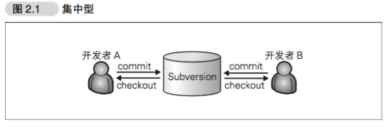

GitHub的入门与实践
@(学习笔记)[老蒋]|地点|[舟山]
GitHub与全世界程序员分享你的代码
第1章 欢迎来到GitHub的世界
1.1 什么是GitHub
GitHub 是为了开发者提供Git仓库的托管服务。这是一个让开发者与朋友、同事、同学及陌生人共享代码的完美场所。
GitHub除提供Git仓库的托管服务外，还为开发者或团队提供了一系列功能，帮助其高效率、高品质地进行代码编写。
1.2 使用GitHub会带来哪些变化
协作形式变化
……在开发者之间引发化学反应的Pull Request
……对特定用户进行评论
……GitHub Flavored Markdown
专栏：还可以这样写！！
GitHub中可使用的描述方法并不止"@用户名"一种。
输入"@组织名"可以让属于该 Organization(组织)的所有成员收到通知。输入"@组织名/团队"可以让该团队的所有成员收到通知。
输入"#编号"，会连接到该仓库所对应的lssue编号。输入"用户名/仓库名#编号"则可以连接到指定仓库所对应的lssue编号。只要按照这类特定格式书写便会自动创建链接。
多加利用上述这些功能，可以让交流更有效率。
能看到更多其他团队的软件
GitHub快捷的环境为开发者带来的合作伙伴，并不只局限于自己团队内部。只要将感兴趣的仓库添加至Watch中，就可以在News Feed查看该仓库的相关信息。
与开源软件相同的开发模式
1.3 社会化编程
GitHub这一服务，为开源世界带来了社会化编程的概念。
如今，世界众多程序员都在通过GitHut公开源代码，同时利用GitHub支持着自己日常的软件开发。软件开发者的世界带来了真正意义上的『民主』，让所有人都平等地拥有了更改源代码的权利。这在软件开发领域是一场巨大的革命。
1.4 为什么需要社会化编程
不要闭目塞听，要接触不同的文化
会写代码的程序员更受青睐
GitHub 最大的特征是”面向人”
您可以将注意力聚集到感兴趣的人身上。他既可以崇拜已久的超级黑客，也可以是同校同学或公司的同事。
能同时关注人和代码，是GitHub为我们带来的一个新的世界。
1.5 GitHub 提供的主要功能
Git 仓库
一般情况下，我们可以免费建立任意个GitHub提供的Git仓库。但如果需要建立只对特定人物或只对自己公开的私有仓库，则需要依照套餐类型支付每月7美元的使用费。
Organization
通常来说，个人使用时只要使用个人账户就足够了，但如果是公司，建议使用Organization。
lssue
Issue 功能，是将一个任务或问题分配给一个 Issue 进行追踪和管理的功能。
Pull Request
开发者向GitHub的仓库推送更改或功能添加后，可以通过Pull Request功能向别人的仓库提出申请，请求对方合并。
第2章 Git的导入
Git 仓库管理功能是GitHub的核心。
2.1 诞生背景
Git 属于分散型版本管理系统，是为版本管理而设计的程序。
Linux 的创始人 Linux Torvalds 在2005年开发了Git的原型程序。
2.2 什么是版本管理
版本管理就是管理更新的历史记录。
集中型与分散型
版本管理系统分为Subversion 这类集中型的与 Git 这类分散型的。
…… 集中型
以 Subversion 为代表的集中型，仓库集中存放在服务器之中，所以只存在一个仓库。
